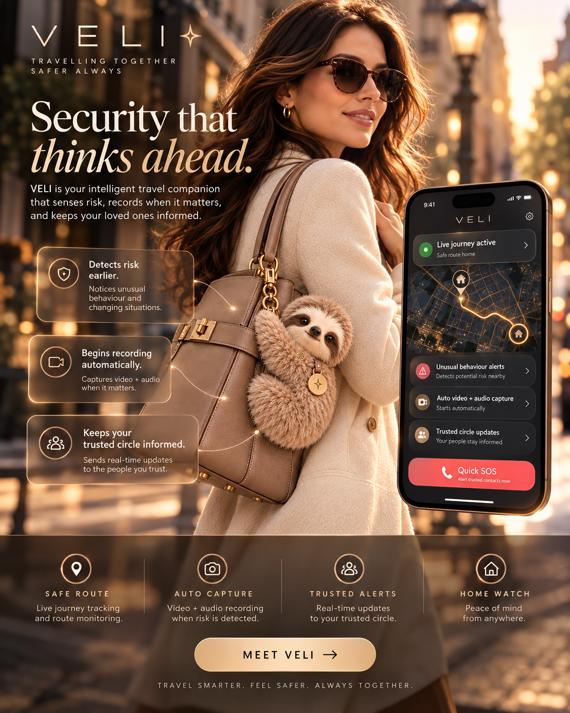
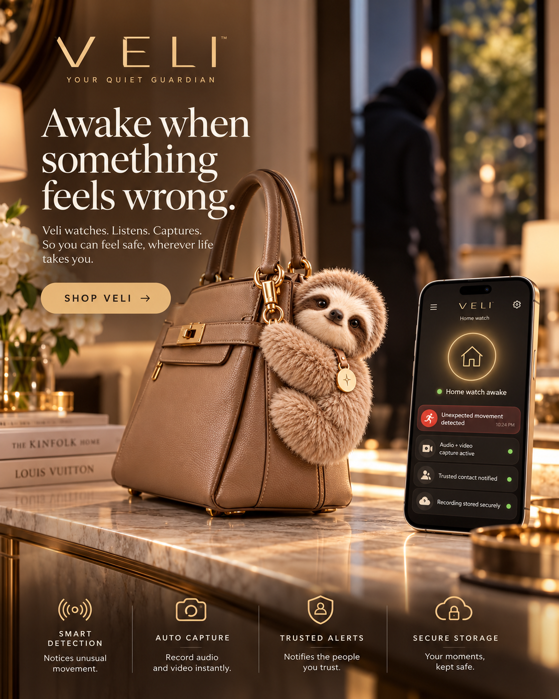
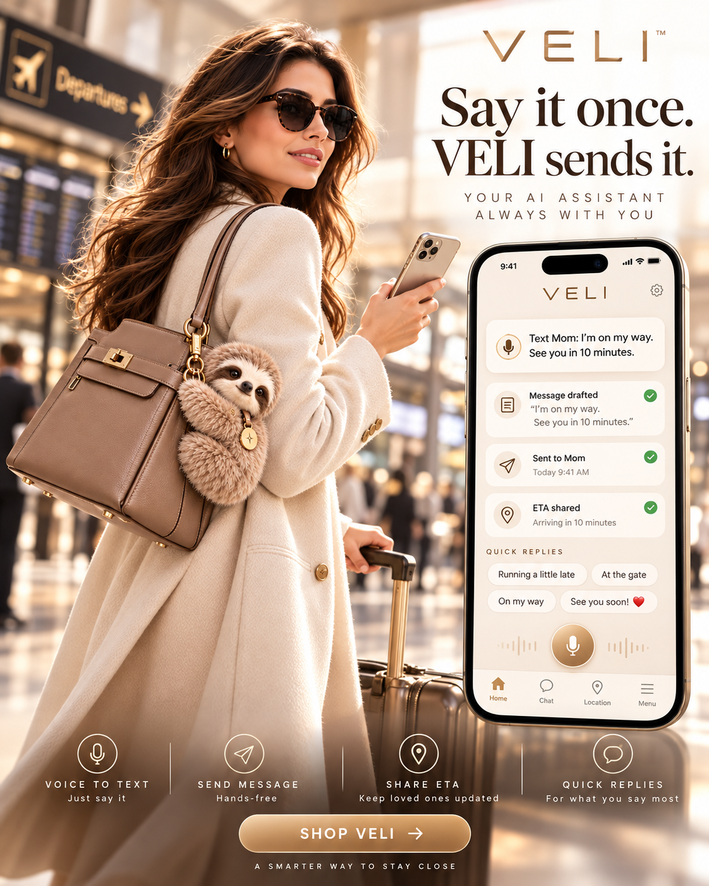
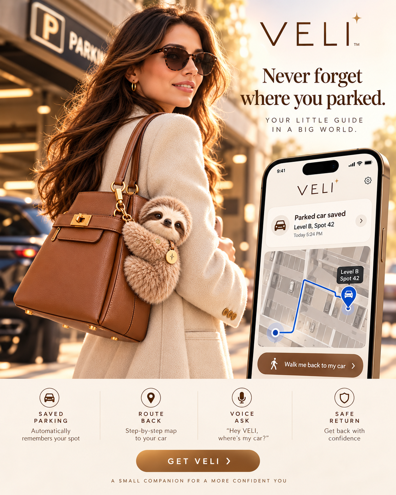

Before
Safer journey support, live journey sharing and a trusted circle that can stay informed.
A BEAUTIFUL AI SAFETY COMPANION
Looks like fashion.
Thinks like a guardian.
VELI lives on the side edge of your bag, crouched close like a real sloth on a tree. It helps with everyday life, watches the world around you and is designed to respond when a journey or situation does not feel right.

SAFETY WITHOUT LOOKING LIKE SAFETY EQUIPMENT
VELI is designed around the moments that matter most: travelling alone, noticing when something changes, and making it easier to get help without needing to stop and manage your phone.
Safer journey support, live journey sharing and a trusted circle that can stay informed.
Unusual-behaviour awareness, fast SOS and automatic audio or video capture when configured to do so.
Securely stored context, alerts and recordings designed to preserve what happened when it matters.

TRAVEL SAFER
VELI is intended to do more than wait for you to press a panic button. During an active journey it can combine location, context and configured safety rules to help recognise when something may be wrong.
Share a journey with the people you choose, only when you want to.
Designed to notice patterns or behaviour that may deserve your attention.
When configured, VELI can begin audio and video capture if a safety trigger is detected.
Keep chosen people updated without broadcasting your location permanently.
A fast path to alert trusted contacts when you need help immediately.
HOME WATCH
VELI can also be useful when you are at home. In a future Home Watch mode, it is intended to wake when configured triggers suggest something unusual is happening nearby.
Notice unexpected movement or unusual activity in the environment around it.
Begin configured audio and video capture without waiting for you to reach your phone.
Send an alert to the contacts you have chosen.
Preserve important captured moments privately for later review.

THE VELI APP
Directions and everyday questions are natural AI behaviour. The app should focus on the things that make VELI genuinely different: the safety layer around you, your journey and your trusted people.
Start a protected journey, share it selectively and see when you arrive.
Surface unusual behaviour or changing situations that may need attention.
Allow configured safety triggers to start audio and video recording.
Choose who receives journey updates, alerts and safety check-ins.
Reach your chosen people quickly when you need immediate help.
Use VELI as an intelligent extra set of eyes and ears when configured at home.

YOUR AI HELPER
The safety layer is what makes VELI special, but it is still an AI companion. You should be able to talk naturally while you move and let VELI handle useful everyday actions.
Text Mum: I’m on my way. See you in ten minutes.Draft, confirm, send and optionally share your ETA.
Remind me to call Sarah when I get home.Remember context instead of making you set up a manual reminder.
What time is my flight and which gate am I leaving from?Bring useful travel information together while you are already moving.
Remember I left the spare key in the blue drawer.Store the small details you know you will forget later.
Translate this for me.Help with language, signs and conversations while travelling.
MEMORY THAT IS ACTUALLY USEFUL
VELI should remember useful context automatically when you ask it to. Your car is the perfect example: save the level and space, then guide you back when it is time to leave.



PRESENT, NOT PASSIVE
VELI remains crouched securely on the outer side edge of the bag while its head is designed to turn outward. That is what gives it personality — and lets its sensors face the world rather than the bag.
FASHION STILL MATTERS
The technology stays discreet. The colour becomes part of your look.

THE IDEA BEHIND VELI
VELI is not meant to feel like an alarm hanging from your bag. It is a beautiful AI companion first — with personal safety, awareness, memory and communication built quietly underneath.

BE FIRST TO MEET VELI
Get product updates, early access and first notice when reservations open.